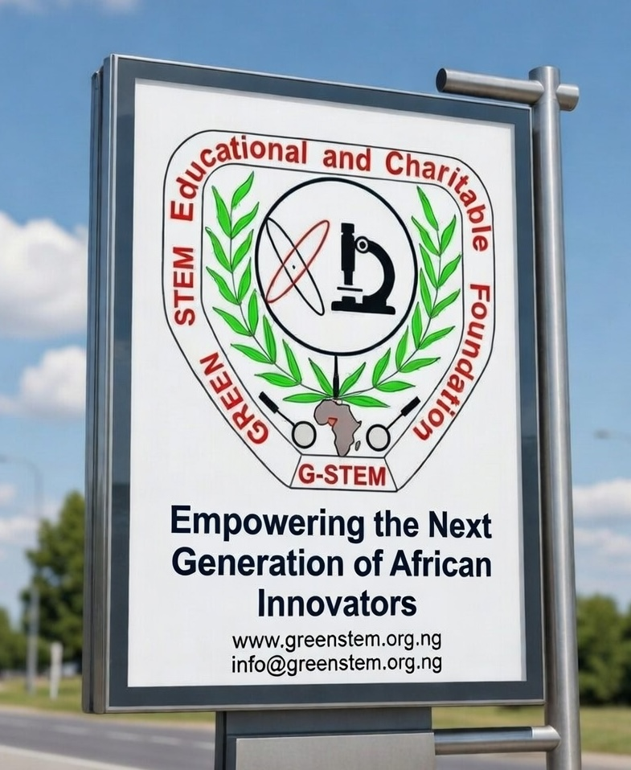

Founded in 2020, the Green STEM Educational and Charitable Foundation (GSECF) is a registered Non-Governmental Organization (NGO) dedicated to transforming Nigeria's future through science, technology, engineering, and mathematics (STEM) education — with a strong emphasis on environmental sustainability.
Our mission is simple yet powerful: to advance Research, Innovation and Commercialisation of Research (RIC) as the sustainable pathway to industrialisation of Nigeria and Africa. We believe that sustainable development cannot be achieved without scientific literacy, innovation, and a green mindset — especially among the youth.

Who We Are
Green STEM ECF is a dynamic, forward-thinking organization composed of educators, researchers, innovators, and passionate volunteers. We work across academic institutions, industries, and communities to promote a research-driven, innovation-led approach to national development.
We focus on three core pillars:
Education
Strengthening STEM education in schools and universities through curriculum enhancement, teacher training, and digital learning tools.
Research & Innovation
Supporting applied research that addresses real-world challenges — from energy access to waste management and climate change.
Commercialization
Bridging the gap between research and market by supporting the development and scaling of green technologies.
Our Vision: A Sustainable Future for Nigeria
Our vision is a Nigeria where science and innovation drive progress — where every student has access to quality STEM education, where researchers are empowered to solve national challenges, and where green technologies power a clean, prosperous economy.
"We don't just teach STEM — we build a green future. By empowering the next generation of innovators, we're building a Nigeria that is not only technologically advanced but also environmentally responsible."
— Dr. Perpetual Eze-Idehen, Coordinator, Green STEM ECF
Key Initiatives
Over the past few years, Green STEM ECF has launched several impactful programs:
Green STEM Symposium
Our flagship annual event brings together experts, researchers, and policymakers to discuss solutions for industrialization and sustainable development.
STEM for Rural Youth
We partner with rural schools to provide STEM kits, training, and mentorship programs to underserved students across Nigeria.
Mentoring for Young Innovators
We connect students and early-stage researchers with experienced mentors in STEM fields to guide their academic and career development.
Green Innovation Labs
We are establishing innovation hubs in collaboration with universities to turn ideas into real-world, scalable solutions.
Why Green STEM?
In a world facing climate change, energy crises, and economic inequality, STEM education must be green. That's why we focus on integrating sustainability into every aspect of our work.
We believe that solutions to Nigeria's most pressing challenges — poverty, unemployment, pollution, and food insecurity — lie in innovation. But innovation must be ethical, inclusive, and environmentally responsible.
"The future belongs to those who understand science and care for the planet. Green STEM is not just a concept — it's a movement."
— Dr. Chukwuma Ogbonnaya, Lead, Organisational Development & Partnerships
Join Us in Building a Brighter Future
Green STEM ECF is more than a foundation — it's a community. We invite educators, researchers, entrepreneurs, donors, and volunteers to join us in building a sustainable future for Nigeria.
VolunteerShare your time and expertise to inspire the next generation of STEM innovators.
Support ResearchFund a project with high societal impact and help researchers reach their potential.
Partner With UsCollaborate on programs that drive education, research, and green innovation.
Spread the WordShare our mission and help us reach more communities across Nigeria and Africa.